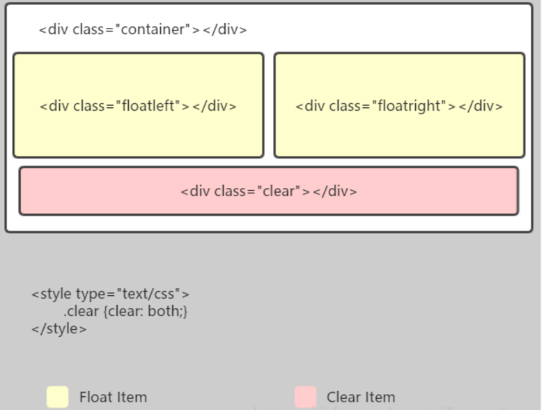
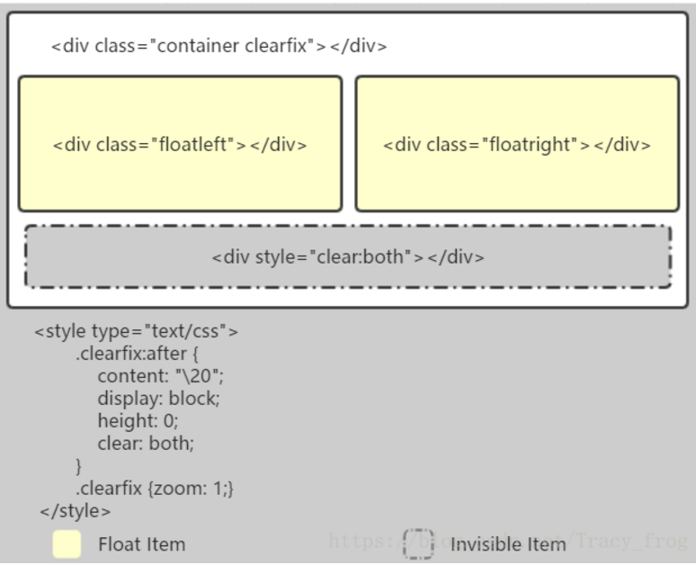
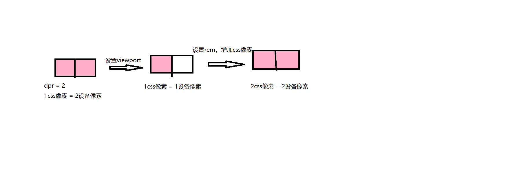

css基础篇（汇总）
1. css选择器
一般而言，选择器越特殊，它的优先级越高。也就是选择器指向的越准确，它的优先级就越高。
!important > 行内样式 > id > 属性 > 伪类 > 类 > 标签 > 伪元素 > 组合选择器 > 通配符(*)。
1.1 css选择器之组合选择器
| 选择器 | 含义 | 作用 |
|---|---|---|
| E,F | 多元素选择器 | 同时匹配元素E或元素F |
| E F | 后代选择器 | 匹配E元素所有的后代（不只是子元素、子元素向下递归）元素F |
| E>F | 子元素选择器 | 匹配E元素的所有直接子元素 |
| E+F | 直接相邻选择器 | 匹配E元素之后的相邻的同级元素F |
| E~F | 普通相邻选择器（弟弟选择器） | 匹配E元素之后的同级元素F（无论直接相邻与否) |
1.2 css选择器之伪类选择器
伪类的操作对象是文档树中已有的元素，而伪元素则创建了一个文档数外的元素。因此，伪类与伪元素的区别在于：有没有创建一个文档树之外的元素。
| 选择器 | 示例 | 示例说明 |
|---|---|---|
| :focus | input:focus | 选择元素输入后具有焦点 |
| :checked | input:checked | 选择所有选中的表单元素 |
| :read-only | input:read-only | 选择只读属性的元素属性 |
| :read-write | input:read-write | 选择没有只读属性的元素属性 |
| :disabled | input:checked | 选择所有禁用的表单元素 |
| :enabled | input:enabled | 选择所有启用的表单元素 |
| :in-range | input:in-range | 选择元素指定范围内的值 |
| :out-of-range | input:out-of-range | 选择指定范围以外的值的元素属性 |
| :valid | input:valid | 选择所有有效值的属性 |
| :invalid | input:invalid | 选择所有无效的元素 |
| :required | input:required | 选择有”required”属性指定的元素属性 |
| :optional | input:optional | 选择没有”required”的元素属性 |
| :empty | p:empty | 选择所有没有子元素的p元素 |
| :first-of-type | p:first-of-type | 选择每个父元素是p元素的第一个p子元素 |
| :last-of-type | p:first-of-type | 选择每个p元素是其父元素的最后一个p元素 |
| :first-child | p:first-child | 匹配第一个p元素 |
| :last-child | p:last-child | 匹配最后一个p元素 |
| :not | :not(p) | 选择所有p以外的元素 |
| :only-child | p:only-child | 选择所有仅有一个子元素的p元素 |
| :nth-child | p:nth-child(2) | 选择所有p元素的第二个子元素 |
| :nth-last-child | p:nth-last-child(2) | 选择所有p元素倒数的第二个子元素 |
| :only-of-type | p:only-of-type | 选择所有仅有一个子元素为p的元素 |
| :nth-of-type | p:nth-of-type(2) | 选择所有p元素第二个为p的子元素 |
| :nth-last-of-type | p:nth-last-of-type(2) | 选择所有p元素倒数的第二个为p的子元素 |
| :link | a:link | 选择所有未访问链接 |
| :visited | a:visited | 选择所有访问过的链接 |
| :hover | a:hover | 把鼠标放在链接上的状态 |
| :active | a:active | 选择正在活动链接 |
| :target | #news:target | 选择当前活动#news元素(点击URL包含锚的名字) |
| :root | root | 选择文档的根元素 |
| :lang | q:lang(no){quotes: “ | 为不同的语言匹配特殊的规则 |
1.3 css选择器之伪元素选择器
| 选择器 | 作用 | 说明 |
|---|---|---|
| ::before/:before | 在被选元素前插入内容。 | 需要使用 content 属性来指定要插入的内容。被插入的内容实际上不在文档树中。 |
| ::after/:after | 在选被元素后插入内容 | 其用法和特性与:before相似。 |
| ::first-letter/:first-letter | 匹配元素中文本的首字母。 | 被修饰的首字母不在文档树中。 |
| ::first-line/:first-line | 匹配元素中第一行的文本。 | 这个伪元素只能用在块元素中，不能用在内联元素中。 |
| ::selection | ::selection匹配用户被用户选中或者处于高亮状态的部分 | 在火狐浏览器使用时需要添加-moz前缀。该伪元素只支持双冒号的形式。 |
| ::placeholder | ::placeholder匹配占位符的文本，只有元素设置了placeholder属性时，该伪元素才能生效。 | 该伪元素不是CSS的标准，它的实现可能在将来会有所改变，所以要决定使用时必须谨慎。在一些浏览器中（IE10和Firefox18及其以下版本）会使用单冒号的形式。 |
| ::backdrop(处于试验阶段) | ::backdrop用于改变全屏模式下的背景颜色，全屏模式的默认颜色为黑色 | 该伪元素只支持双冒号的形式 |
1.4 css选择器之属性选择器
| 选择器 | 示例 | 示例说明 |
|---|---|---|
| [attribute] | a[target] | 用于选择具有指定属性的元素 |
| [attribute=”value”] | a[target=”_blank”] | 用于选择具有指定属性和值的元素 |
| [attribute~=”value”] | [title~=”flower”] | 于选择包含指定单词的属性值的元素 |
| [attribute|=”value”] | [class|=”top”] | 用于选取带有以指定值(此处top-)开头的属性值的元素 |
| [attribute^=”value”] | [class^=”top”] | 用于选择属性值以指定值(此处top)开始的元素 |
| [attribute$=”value”] | [class$=”test”] | 用于选择属性值以指定值结束的元素 |
| [attribute*=”value”] | [class*=”te”] | 用于选择属性值包含指定值的元素 |
2. 清除浮动（代码示例）
父元素没有设置高度，子元素浮动会导致父元素坍塌，此时内容会溢出容器外导致布局受影响。这种现象称为浮动。
父级 div 定义 height
原理：父级 div 手动定义 height，就解决了父级 div 无法自动获取到高度的问题。
优点：简单、代码少、容易掌握
缺点：只适合高度固定的布局在浮动元素后添加一个空标签
<div class="clear"></div>，并且在CSS中设置.clear{clear:both;}，即可清理浮动。
官方对clear属性解释：“元素盒子的边不能和前面的浮动元素相邻”，对元素设置clear属性是为了避免浮动元素对该元素的影响，而不是清除掉浮动。

原理：添加一个空标签，利用CSS提高的clear:both清除浮动，让父元素可以自动获取到高度
优点：简单，代码少，兼容所有浏览器
缺点：增加页面的标签，造成结构的混乱
建议：不推荐使用，此方法已经过时:after伪元素

原理：通过CSS伪元素在容器的内部元素之后添加一个看不见的空格“\20”或点“.” ，并且设置clear属性清除浮动。IE8 以上和非 IE 浏览器才支持:after，原理和方法 2 有点类似，*zoom(IE 专有属性，IE版本的BFC（Layout），可通过*zoom:1触发)可解决ie6，ie7 浮动问题 ，推荐使用，建议定义公共类，以减少 CSS 代码
优点：浏览器支持较好
缺点：clearfix这个class需要添加*zoom: 1（触发haslayout,当一个元素的hasLayout属性值为true时，它负责对自己和可能的子孙元素进行尺寸计算和定位），才能支持IE6和IE7浏览器
建议：推荐使用，设置公共类，减少CSS代码父级元素定义：
overflow:auto/hidden; *zoom:1，触发BFC特性。
3. 盒子模型
- 标准盒子模型（width和height属性只包含content）
宽度 = 内容的宽度（content）+ border + padding + margin
高度 = 内容的高度（content）+ border + padding + margin - 低版本IE盒子模型（width和height属性包含了content、border、padding）
宽度 = 内容宽度（content + border + padding）+ margin
高度 = 内容高度（content + border + padding）+ margin
可以通过修改元素的box-sizing属性来改变元素的盒模型
- box-sizeing: content-box 表示标准盒模型（默认值）
- box-sizeing: border-box 表示IE盒模型（怪异盒模型）
4. css中可以继承的样式
可继承的属性：font-size, font-family, color
不可继承的属性：border, padding, margin, width, height
5. BFC（块级格式化上下文）
具有 BFC 特性的元素可以看作是隔离了的独立容器，容器里面的元素不会在布局上影响到外面的元素，并且 BFC 具有普通容器所没有的一些特性。
只要元素满足下面任一条件即可触发 BFC 特性：
- body根元素
- 浮动元素：float 除 none 以外的值
- 绝对定位元素：position (absolute、fixed)
- display 为 inline-block、table-cells、flex
- overflow 除了 visible 以外的值 (hidden、auto、scroll)
BFC的特点：
- 垂直方向上，自上而下排列，和文档流的排列方式一致。
- 在BFC中上下相邻的两个容器的margin会重叠
- 计算BFC的高度时，需要计算浮动元素的高度
- BFC区域不会与浮动的容器发生重叠
- BFC是独立的容器，容器内部元素不会影响外部元素
- 每个元素的左margin值和容器的左border相接触
应用：
解决margin的重叠问题（margin合并）
毗邻元素处于同一BFC中，将会发生外边距合并。In this specification, the expression collapsing margins means that adjoining margins (no non-empty content, padding or border areas or clearance separate them) of two or more boxes (which may be next to one another or nested) combine to form a single margin. 所有毗邻的两个或更多盒元素的margin将会合并为一个margin共享之。毗邻的定义为：同级或者嵌套的盒元素，并且它们之间没有非空内容、Padding或Border分隔。
解决高度塌陷的问题（父元素设置overflow: auto/hidden）
原理：计算BFC的高度时，需要计算浮动元素的高度创建自适应两栏布局（左侧固定宽度，右侧自适应）
原理：BFC区域不会与浮动的容器发生重叠
实现方法：左侧浮动，右侧变为BFC。
6. 两栏布局和三栏布局实现
6.1 两栏布局
- 左侧浮动，右侧magin-left
- 左侧浮动，右侧bfc(overflow: hidden)
- 左侧绝对定位，右侧magin-left
- 右侧绝对定位left: 200px
- flex: 1
6.2 三栏布局
- 左右侧绝对定位，中间margin
- 利用浮动
- flex: 1
- 利用负margin（css布局——双飞翼布局和圣杯布局）
- calc
7. 居中布局的实现
以下为简单总结：
- 行内元素水平居中
text-align: center; - 块状元素水平居中
margin: 0 auto; - 多个块状元素水平居中
1. display: inline-block; 和text-align: center;配合使用2. flex布局 - 已知高度宽度元素水平垂直居中
1. 绝对定位与负margin方法2. display: absolute; top: 0; left: 0; right: 0; bottom: 0; margin: auto; - 未知宽度高度元素水平垂直居中
1. 将子元素改为inline或inline-block，然后设置父元素display: table-cell; text-align: center; vertical-align: middle;2. translate -50%方法3. flex布局
8. postion几个属性的作用？
position 的常见四个属性值： relative，absolute，fixed，static。一般都要配合”left”、”top”、”right”以及 “bottom” 属性使用。
1）Static静态定位：默认位置，设置为 static 的元素，它始终会处于页面流给予的位置（static 元素会忽略任何 top、bottom、left 或 right 声明）。一般不常用。
2）Relative相对定位：位置被设置为 relative 的元素，可将其移至相对于其正常位置的地方，意思就是如果设置了 relative 值，那么，它偏移的 top，right，bottom，left 的值都以它原来的位置为基准偏移，而不管其他元素会怎么样。注意 relative 移动后的元素在原来的位置仍占据空间。
3）Absolute绝对定位：位置设置为 absolute 的元素，可定位于相对于包含它的元素的指定坐标。意思就是如果它的父容器设置了 position 属性，并且 position 的属性值为 absolute 或者relative，那么就会依据父容器进行偏移。如果其父容器没有设置 position 属性，那么偏移是以 body 为依据。注意设置 absolute 属性的元素在标准流中不占位置。
4）Fixed固定定位：位置被设置为 fixed 的元素，可定位于相对于浏览器窗口的指定坐标。不论窗口滚动与否，元素都会留在那个位置。它始终是以 body 为依据的。 注意设置 fixed 属性的元素在标准流中不占位置。
9. 对Flex布局的理解及其使用场景
10. display:none与visibility：hidden的区别？
display：none 不显示对应的元素，在文档布局中不再分配空间（重排+重绘）
visibility：hidden 隐藏对应元素，在文档布局中仍保留原来的空间（重绘）
11. 当margin-top、padding-top的值是百分比时，分别是如何计算的？
对元素的margin设置百分数，是相对于父元素的width计算的，不管是margin-top/margin-bottom/margin-left还是margin-right。（padding同理）
12. 重排和重绘
重绘是一个元素外观的改变所触发的浏览器行为，例如改变 visibility、outline、背景色等属性。浏览器会根据元素的新属性重新绘制，使元素呈现新的外观。重绘不会带来重新布局，并不一定伴随重排。
重排是更明显的一种改变，可以理解为渲染树需要重新计算。下面是常见的触发重排的操作：
1）DOM 元素的几何属性变化
2）DOM 树的结构变化
3）获取某些属性
4）此外，改变元素的一些样式，调整浏览器窗口大小等等也都将触发重排。
注：重排对性能有很大的影响。
13. css3,html5,es6的新特性
css3新特性
html5的新特性
es6的新特性
let/const、class、扩展运算符、rest参数、模板字符串、Set、变量的解构赋值、Symbol（一种新的原始数据类型，表示独一无二的ID，它通过Symbol函数生成）
14. CSS优化、提高性能的方法有哪些？
14.1 加载性能
- css包压缩，减小文件体积
- css单一样式，当需要下边距和左边距的时候，很多时候会选择使用
margin:top 0 bottom 0;但margin-bottom:bottom;margin-left:left;执行效率会更高。 - 减少使用@import，建议使用link，因为后者在页面加载时一起加载，前者是等待页面加载完成之后再进行加载。
14.2 选择器性能
- CSS选择符是从右到左进行匹配的，所以选择器最后面部分为最关键部分，如果规则拥有ID选择器作为其关键选择器，则不要为规则增加标签。过滤掉无关的规则（这样样式系统就不会浪费时间去匹配它们了）
- 避免使用通配规则，如*{}计算次数惊人，只对需要用到的元素进行选择。
- 尽量少的去对标签进行选择，而是用class。
- 尽量少的去使用后代选择器，降低选择器的权重值。后代选择器的开销是最高的，尽量将选择器的深度降到最低，最高不要超过三层，更多的使用类来关联每一个标签元素。
- 了解哪些属性是可以通过继承而来的，然后避免对这些属性重复指定规则
14.3 渲染性能
- 慎重使用高性能属性：浮动、定位。
- 尽量减少页面重排、重绘。
- 去除空规则：｛｝。空规则的产生原因一般来说是为了预留样式。去除这些空规则无疑能减少css文档体积。
- 属性值为0时，不加单位。
- 标准化各种浏览器前缀：带浏览器前缀的在前。标准属性在后。
- 不使用@import前缀，它会影响css的加载速度。
- css雪碧图，同一页面相近部分的小图标，方便使用，减少页面的请求次数，但是同时图片本身会变大，使用时，优劣考虑清楚，再使用。
14.4 可维护性、健壮性
- 将具有相同属性的样式抽离出来，整合并通过class在页面中进行使用，提高css的可维护性。
- 样式与内容分离：将css代码定义到外部css中。
15. link和@import的区别
两者都是外部引用CSS的方式，它们的区别如下：
- link是XHTML标签，除了加载CSS外，还可以定义RSS等其他事务；@import属于CSS范畴，只能加载CSS。
- link引用CSS时，在页面载入时同时加载；@import需要页面网页完全载入以后加载。
- link是XHTML标签，无兼容问题；@import是在CSS2.1提出的，低版本的浏览器不支持。
- link支持使用Javascript控制DOM去改变样式；而@import不支持。
16. 对 CSS Sprites 的理解
CSS Sprites（精灵图），将一个页面涉及到的所有图片都包含到一张大图中去，然后利用CSS的 background-image，background-repeat，background-position属性的组合进行背景定位。
优点：
利用CSS Sprites能很好地减少网页的http请求，从而大大提高了页面的性能，这是CSS Sprites最大的优点；
CSS Sprites能减少图片的字节，把3张图片合并成1张图片的字节总是小于这3张图片的字节总和。
缺点：
在图片合并时，要把多张图片有序的、合理的合并成一张图片，还要留好足够的空间，防止板块内出现不必要的背景。在宽屏及高分辨率下的自适应页面，如果背景不够宽，很容易出现背景断裂；
CSSSprites在开发的时候相对来说有点麻烦，需要借助photoshop或其他工具来对每个背景单元测量其准确的位置。
维护方面：
CSS Sprites在维护的时候比较麻烦，页面背景有少许改动时，就要改这张合并的图片，无需改的地方尽量不要动，这样避免改动更多的CSS，如果在原来的地方放不下，又只能（最好）往下加图片，这样图片的字节就增加了，还要改动CSS。
17. px，em，rem 的区别？
1）px 像素（Pixel）。绝对单位。像素 px 是相对于显示器屏幕分辨率而言的，是一个虚拟长度单位，是计算机系统的数字化图像长度单位，如果 px 要换算成物理长度，需要指定精度 DPI。
2）em 是相对长度单位，相对于当前对象内文本的字体尺寸。如当前对行内文本的字体尺寸未被人为设置，则相对于浏览器的默认字体尺寸。它会继承父级元素的字体大小，因此并不是一个固定的值。
3）rem 是 CSS3 新增的一个相对单位（root em，根 em），使用 rem 为元素设定字体大小时，仍然是相对大小，但相对的只是 HTML 根元素。
4）区别：IE 无法调整那些使用 px 作为单位的字体大小，而 em 和 rem 可以缩放，rem 相对的只是 HTML 根元素。这个单位可谓集相对大小和绝对大小的优点于一身，通过它既可以做到只修改根元素就成比例地调整所有字体大小，又可以避免字体大小逐层复合的连锁反应。目前，除了 IE8 及更早版本外，所有浏览器均已支持 rem。
18. 什么是响应式设计？响应式设计的基本原理是什么？如何兼容低版本的IE？
响应式网站设计(Responsive Web design)是一个网站能够兼容多个终端，而不是为每一个终端做一个特定的版本。
实现方法：@media + viewport
- 媒体查询（@media），基本原理是通过媒体查询检测不同的设备屏幕尺寸做处理。pc端和移动端使用同一个项目，使用媒体查询实现响应式。缺点是要写很多样式，十分复杂。
下面简单使用媒体查询，使两栏布局在小屏设备下隐藏左侧。网格和媒体查询结合1
2
3
4
5
6
7
8
9// 屏幕大小小于768px时候，隐藏左侧
.left {
display: none;
}
@media only screen and (min-width: 768px) { // 屏幕大小大于等于768px时候，展示左侧
.left {
display: block;
}
}创建适应不同设备的方向(横屏landscape、竖屏portrait等)的布局1
2
3
4
5
6
7
8
9
10
11
12
13
14
15
16
17
18
19/* For mobile phones: */
[class*="col-"] {
width: 100%;
}
@media only screen and (min-width: 768px) {
/* For desktop: */
.col-1 {width: 8.33%;}
.col-2 {width: 16.66%;}
.col-3 {width: 25%;}
.col-4 {width: 33.33%;}
.col-5 {width: 41.66%;}
.col-6 {width: 50%;}
.col-7 {width: 58.33%;}
.col-8 {width: 66.66%;}
.col-9 {width: 75%;}
.col-10 {width: 83.33%;}
.col-11 {width: 91.66%;}
.col-12 {width: 100%;}
}1
2
3
4
5
6// 如果是竖屏背景将是浅蓝色：
@media only screen and (orientation: landscape) {
body {
background-color: lightblue;
}
} - 响应式网页设计之viewport
Viewport 是用户网页的可视区域。
Viewport 随设备而异，在移动手机上比在电脑屏幕上要小。
在平板电脑和移动手机之前，网页只为电脑屏幕设计，网页的静态设计和固定大小是很常见的。
然后，当我们开始使用平板电脑和手机上网的时候，固定大小的网页太大了，不适合观看。为了解决这个问题，这些设备上的浏览器缩小了整个网页以适应屏幕。
这并不完美！但可快速修复。<meta> 窗口元素为浏览器提供了如何控制页面尺寸和缩放的说明。1
<meta name="viewport" content="width=device-width,initial-scale=1.0, maximum-scale=1,user-scalable=no"/>
width=device-width 部分将页面的宽度设置为跟随设备的屏幕宽度（其将根据设备变化而变化）。
initial-scale=1.0 部分设置浏览器首次加载页面时的初始缩放级别。
19. 根据设计稿进行移动端web页面适配的方案
移动端适配主要有两个维度：
- 适配不同像素密度， 针对不同的像素密度，使用 CSS 媒体查询，选择不同精度的图片，以保证图片不会失真；
- 适配不同屏幕大小， 由于不同的屏幕有着不同的逻辑像素大小，所以如果直接使用 px 作为开发单位，会使得开发的页面在某一款手机上可以准确显示，但是在另一款手机上就会失真。为了适配不同屏幕的大小，应按照比例来还原设计稿的内容。
实现方案：
- 媒体查询
- flex弹性布局
- rem 只用rem可以实现适配不同屏幕大小，但不能适配不同像素密度。
原理：- htmlFontSize = 100 * clientWidth / baseWidth + ‘px’，则设计稿上的100px是页面上的1rem
- rem + viewport （示例代码）

原理：- viewport设置scale = 1 / dpr，页面缩小到1个css像素由1个设备像素来显示，此时clientWidth = screenWidth * dpr。
- rem设置clientWidth(屏幕宽度) / baseWidth(设计稿宽度)，相当于增加css像素数量，占满设备屏幕。
- 字体最好使用px，考虑到使用rem会随着屏幕大小改变字体的大小，我们希望在不同屏幕上看到字体大小是一样的。封装一个sass混合宏，提高开发效率
1
2
3
4
5
6
7
8
9
10
11div {
width: 1rem;
height: 0.4rem;
font-size: 12px; // 默认写上dpr为1的fontSize
}
[data-dpr="2"] div {
font-size: 24px;
}
[data-dpr="3"] div {
font-size: 36px;
}使用如下1
2
3
4
5
6
7
8
9
10@mixin font-dpr($font-size){
font-size: $font-size;
[data-dpr="2"] & {
font-size: $font-size * 2;
}
[data-dpr="3"] & {
font-size: $font-size * 3;
}
}参考1
@include font-dpr(16px);
- 移动前端开发之viewport的深入理解
- 移动端Web页面适配方案
- flexible.js 布局详解
20. 1px边框问题（示例代码）
- 直接把 1px 改成 1/dpr 后的值，这是目前为止最简单的一种方法。这种方法的缺陷在于兼容性不行，IOS 系统需要8及以上的版本，安卓系统则直接不兼容。
- 利用伪元素 +
transform: scale(0.5)实现 box-shadow: 0 1px 1px -1px rgba(0, 0, 0, 0.5);linear-gradient- viewport将1px处理成物理像素大小
21. 设置小于12px的字体
在谷歌下css设置字体大小为12px及以下时，显示都是一样大小，都是默认12px。
解决办法：
- 使用Webkit的内核的-webkit-text-size-adjust的私有CSS属性来解决，只要加了-webkit-text-size-adjust:none;字体大小就不受限制了。但是chrome更新到27版本之后就不可以用了。所以高版本chrome谷歌浏览器已经不再支持-webkit-text-size-adjust样式，所以要使用时候慎用。
- 使用css3的transform缩放属性-webkit-transform:scale(0.5); 注意-webkit-transform:scale(0.75);收缩的是整个元素的大小，这时候，如果是内联元素，必须要将内联元素转换成块元素，可以使用display：block/inline-block/…；
- 使用图片：如果是内容固定不变情况下，使用将小于12px文字内容切出做图片，这样不影响兼容也不影响美观。
22. z-index属性
z-index，又称为对象的层叠顺序，它用一个整数来定义堆叠的层次，整数值越大，则被层叠在越上面，当然这是指
同级元素间的堆叠，如果两个对象的此属 性具有同样的值，那么将依据它们在HTML文档中流的顺序层叠，写在后面的将会覆盖前面的。需要注意的是，父子关系是无法用z-index来设定上下关系 的，一定是子级在上父级在下。
Note：使用static定位或无position定位的元素z-index属性是无效的。
23. 对requestAnimationframe的理解
实现动画效果的方法比较多，Javascript 中可以通过定时器 setTimeout 来实现，CSS3 中可以使用 transition 和 animation 来实现，HTML5 中的 canvas 也可以实现。除此之外，HTML5 提供一个专门用于请求动画的API，那就是 requestAnimationFrame，顾名思义就是请求动画帧。
MDN对该方法的描述：
window.requestAnimationFrame() 告诉浏览器——你希望执行一个动画，并且要求浏览器在下次重绘之前调用指定的回调函数更新动画。该方法需要传入一个回调函数作为参数，该回调函数会在浏览器下一次重绘之前执行。
语法： window.requestAnimationFrame(callback); 其中，callback是下一次重绘之前更新动画帧所调用的函数(即上面所说的回调函数)。该回调函数会被传入DOMHighResTimeStamp参数，它表示requestAnimationFrame() 开始去执行回调函数的时刻。该方法属于宏任务，所以会在执行完微任务之后再去执行。
取消动画： 使用cancelAnimationFrame()来取消执行动画，该方法接收一个参数——requestAnimationFrame默认返回的id，只需要传入这个id就可以取消动画了。
优势：
- CPU节能：使用SetTinterval 实现的动画，当页面被隐藏或最小化时，SetTinterval 仍然在后台执行动画任务，由于此时页面处于不可见或不可用状态，刷新动画是没有意义的，完全是浪费CPU资源。而RequestAnimationFrame则完全不同，当页面处理未激活的状态下，该页面的屏幕刷新任务也会被系统暂停，因此跟着系统走的RequestAnimationFrame也会停止渲染，当页面被激活时，动画就从上次停留的地方继续执行，有效节省了CPU开销。
- 函数节流：在高频率事件( resize, scroll 等)中，为了防止在一个刷新间隔内发生多次函数执行，RequestAnimationFrame可保证每个刷新间隔内，函数只被执行一次，这样既能保证流畅性，也能更好的节省函数执行的开销，一个刷新间隔内函数执行多次时没有意义的，因为多数显示器每16.7ms刷新一次，多次绘制并不会在屏幕上体现出来。
- 减少DOM操作：requestAnimationFrame 会把每一帧中的所有DOM操作集中起来，在一次重绘或回流中就完成，并且重绘或回流的时间间隔紧紧跟随浏览器的刷新频率，一般来说，这个频率为每秒60帧。
setTimeout执行动画的缺点：它通过设定间隔时间来不断改变图像位置，达到动画效果。但是容易出现卡顿、抖动的现象；原因是：
- settimeout任务被放入异步队列，只有当主线程任务执行完后才会执行队列中的任务，因此实际执行时间总是比设定时间要晚；
- settimeout的固定时间间隔不一定与屏幕刷新间隔时间相同，会引起丢帧。
24. 常见的图片格式及使用场景
（1）BMP，是无损的、既支持索引色也支持直接色的点阵图。这种图片格式几乎没有对数据进行压缩，所以BMP格式的图片通常是较大的文件。
（2）GIF是无损的、采用索引色的点阵图。采用LZW压缩算法进行编码。文件小，是GIF格式的优点，同时，GIF格式还具有支持动画以及透明的优点。但是GIF格式仅支持8bit的索引色，所以GIF格式适用于对色彩要求不高同时需要文件体积较小的场景。
（3）JPEG是有损的、采用直接色的点阵图。JPEG的图片的优点是采用了直接色，得益于更丰富的色彩，JPEG非常适合用来存储照片，与GIF相比，JPEG不适合用来存储企业Logo、线框类的图。因为有损压缩会导致图片模糊，而直接色的选用，又会导致图片文件较GIF更大。
（4）PNG-8是无损的、使用索引色的点阵图。PNG是一种比较新的图片格式，PNG-8是非常好的GIF格式替代者，在可能的情况下，应该尽可能的使用PNG-8而不是GIF，因为在相同的图片效果下，PNG-8具有更小的文件体积。除此之外，PNG-8还支持透明度的调节，而GIF并不支持。除非需要动画的支持，否则没有理由使用GIF而不是PNG-8。
（5）PNG-24是无损的、使用直接色的点阵图。PNG-24的优点在于它压缩了图片的数据，使得同样效果的图片，PNG-24格式的文件大小要比BMP小得多。当然，PNG24的图片还是要比JPEG、GIF、PNG-8大得多。
（6）SVG是无损的矢量图。SVG是矢量图意味着SVG图片由直线和曲线以及绘制它们的方法组成。当放大SVG图片时，看到的还是线和曲线，而不会出现像素点。SVG图片在放大时，不会失真，所以它适合用来绘制Logo、Icon等。
（7）WebP是谷歌开发的一种新图片格式，WebP是同时支持有损和无损压缩的、使用直接色的点阵图。从名字就可以看出来它是为Web而生的，什么叫为Web而生呢？就是说相同质量的图片，WebP具有更小的文件体积。现在网站上充满了大量的图片，如果能够降低每一个图片的文件大小，那么将大大减少浏览器和服务器之间的数据传输量，进而降低访问延迟，提升访问体验。目前只有Chrome浏览器和Opera浏览器支持WebP格式，兼容性不太好。
在无损压缩的情况下，相同质量的WebP图片，文件大小要比PNG小26%；
在有损压缩的情况下，具有相同图片精度的WebP图片，文件大小要比JPEG小25%~34%；
WebP图片格式支持图片透明度，一个无损压缩的WebP图片，如果要支持透明度只需要22%的格外文件大小。
25. 实现宽高自适应的正方形
- 利用padding-top百分比是相对于父元素的width
1
2
3
4
5
6.square {
width: 20%; // 等于父元素width * 20%
height: 0;
padding-top: 20%; // 等于父元素width * 20%
background: orange;
} - 利用子元素margin-top百分比是相对于父元素的width
1
2
3
4
5
6
7
8
9
10.square {
width: 30%; // 等于父元素width * 30%
overflow: hidden;
background: yellow;
}
.square::after {
content: '';
display: block;
margin-top: 100%; // 等于父元素width
}